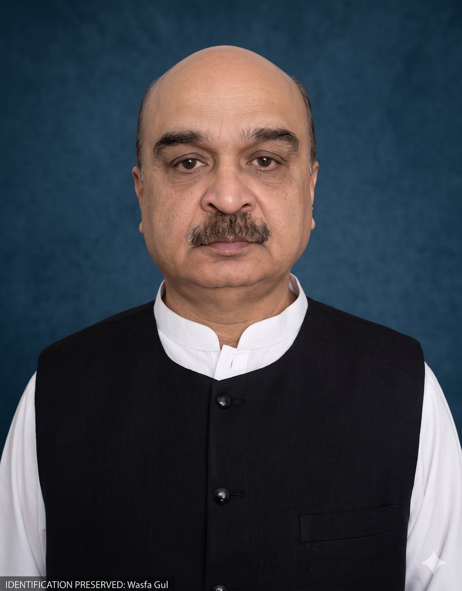
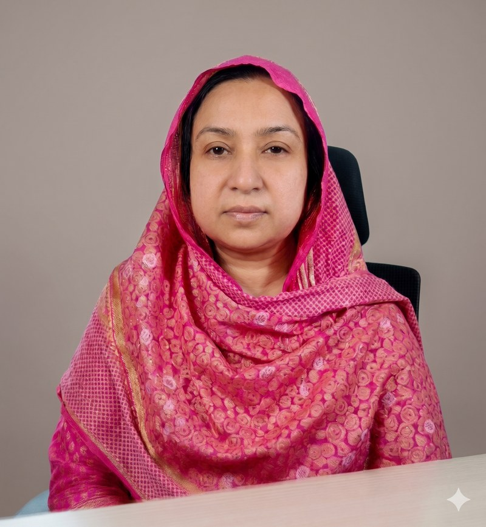
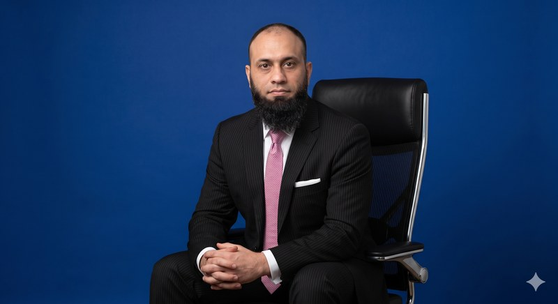

Dr Khalid Gondal
Chairman
Senior physician and healthcare administrator with decades of public-sector experience, including leadership roles at Punjab Health Department and Fauji Foundation Hospital.
MBBSMCPS HCSMPMDC Registered
A registered non-profit dedicated to lasting social impact through healthcare and education.
Access to healthcare and education should never depend on financial status.
Every year, thousands of families postpone medical treatment because they cannot afford hospital expenses. Similarly, many talented students abandon their educational dreams due to limited resources.
Recognising these challenges, Wasfa Gul Foundation committed itself to creating sustainable solutions rather than temporary assistance. Our flagship initiative is the construction of a modern charitable hospital in Jhelum, equipped with advanced medical technology and qualified healthcare professionals.
Alongside healthcare, the Foundation promotes educational development by supporting deserving students through technology-enabled distance learning programmes. By investing in health and education, we are investing in stronger families, healthier communities, and a brighter future.


Every great nation is built upon healthy and educated citizens. Unfortunately, many families continue to suffer because quality healthcare and education remain beyond their financial reach. Wasfa Gul Foundation was established to change this reality.
Our vision extends beyond constructing buildings — we aim to build hope, restore dignity, and create opportunities for those who need them most. We invite individuals, businesses, philanthropists and development partners to join us in this noble mission. Together, we can build institutions that will continue serving humanity for decades to come.
Thank you for believing in our mission.
The Foundation is led by a board combining clinical expertise, healthcare governance and financial oversight.
Chairman
Senior physician and healthcare administrator with decades of public-sector experience, including leadership roles at Punjab Health Department and Fauji Foundation Hospital.

Trustee · Foundation Namesake
Consultant diagnostic radiologist with senior clinical experience across leading Pakistani tertiary-care institutions — Mayo Hospital Lahore, Sir Ganga Ram Hospital, INMOL and the Punjab Institute of Cardiology.

Trustee · Finance & Governance
Fellow Chartered Accountant providing oversight on the Foundation's financial governance, audit, and regulatory compliance — ensuring every donation is tracked, reported and utilised responsibly.
To build a society where quality healthcare and education are accessible to every deserving individual, regardless of financial background.
We serve humanity with empathy, dignity and respect.
Complete transparency in operations and financial management.
Services that meet the highest professional standards.
Every donation is treated as a trust and utilised responsibly.
Projects that continue benefiting communities for generations.
We see possibility where others see barriers — for every family we touch.

Wasfa Gul Foundation is committed to operating with the highest standards of governance, accountability and ethical practice.